Data Science for Electron Microscopy
Week 7: CNNs & U-Nets for microscopy
FAU Erlangen-Nürnberg
Institute of Micro- and Nanostructure Research


Recap: Week 6 and today’s question
- Week 6: neural networks from first principles — perceptron, MLP, activations, softmax/cross-entropy, autograd and backprop, initialisation, batch/layer norm, training diagnostics.
- Core insight: a network is empirical-risk minimisation by gradient descent on a composition of learnable maps; backprop gives \(\nabla_\theta \hat{R}\) for free.
- Gap: an MLP flattens every image into a vector. A 1024×1024 HAADF image into one dense layer with 1000 neurons already needs one billion weights — and the top-left and bottom-right pixels are unrelated inputs.
- Today’s question: how do we build spatial structure into the architecture — locality, “same feature anywhere”, hierarchy — and how do we check what the trained network actually looks at?
- Answer: convolutional networks, U-Nets for per-pixel segmentation, and saliency-type explanations.
Road map, learning outcomes and self-study
Road map (≈90 min)
- Why MLPs fail on images
- Convolution, stride, padding, channels
- Weight sharing, equivariance vs invariance
- Pooling, receptive field, hierarchy
- Architectures: LeNet → AlexNet → VGG → ResNet
- U-Net segmentation: Dice/IoU, class imbalance, EM cases
- Explainability: saliency, Grad-CAM, occlusion, shortcuts
- Failure modes, checklist, Week 8 preview
After today you can …
- compute output shapes, parameter counts and receptive fields of a CNN;
- distinguish translation equivariance from invariance and say which a task needs;
- explain why skip connections make deep nets (ResNet) and sharp masks (U-Net) possible;
- evaluate a segmentation with IoU/Dice and handle class imbalance;
- produce and critically read saliency, Grad-CAM and occlusion maps.
The parameter explosion: a concrete count
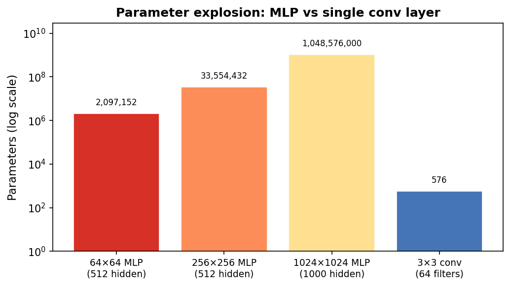
MLP parameter count vs a single convolutional layer for images of increasing size. Note the log scale. A 1024×1024 image with 1000 hidden neurons requires ~10⁹ weights; 64 conv filters of size 3×3 require only 576.
MLPs destroy spatial structure
- An MLP flattens the image: pixel (0,0), pixel (0,1), pixel (0,2), …, in row-major order.
- After flattening, the model treats pixel (100,100) and pixel (200,200) as completely unrelated input coordinates — no notion of “next to each other.”
- Physics says the opposite: a grain boundary is a spatially local feature. An atomic column’s contrast depends on its immediate neighborhood, not on pixels in a different part of the image.
- Result: the MLP must relearn the same edge detector at every possible image location — and then relearn it again if the same feature appears at a different size.
The translation problem: why position should not matter
- If a precipitate moves 5 pixels to the right, the MLP sees a completely different input vector.
- Every weight connected to the old location is now irrelevant; the model must have independently learned the same precipitate pattern at every position.
- This is physically absurd: a precipitate is a precipitate regardless of where it sits in the field of view.
- What we want: a feature detector that fires whenever the precipitate appears — regardless of location.
- This property is called translation equivariance: shift the input → the feature response shifts by the same amount.
Summary: three failures of MLP on images
| Problem | MLP behaviour | CNN fix |
|---|---|---|
| Parameter explosion | \(D \times M\) weights per layer | \(k_h k_w C_{out} C_{in}\) kernel weights |
| No spatial structure | All pixels treated equally | Local receptive field: inspect \(k \times k\) patch |
| No translation awareness | Relearn at every location | Weight sharing: one kernel applied everywhere |
CNNs are MLPs with locality and weight sharing built in as hard constraints.
Convolution: one idea, three properties at once
- Take a small kernel (e.g. 3×3 weights).
- Slide it across the image, pixel by pixel.
- At each position: multiply the kernel by the overlapping image patch, element-wise, and sum → one output value.
- The output is a feature map: a new image where each pixel encodes how strongly the kernel’s pattern appeared at that location.
- One kernel produces one feature map. Multiple kernels in parallel → multiple feature maps.
The sliding-window operation step by step
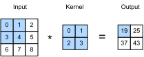
Two-dimensional cross-correlation (the operation CNNs actually use). The 3×3 kernel slides one position at a time. At each position, nine element-wise multiplications are summed to give one output value. The output grid records the detector response at every spatial location.
Convolution on a synthetic grain image
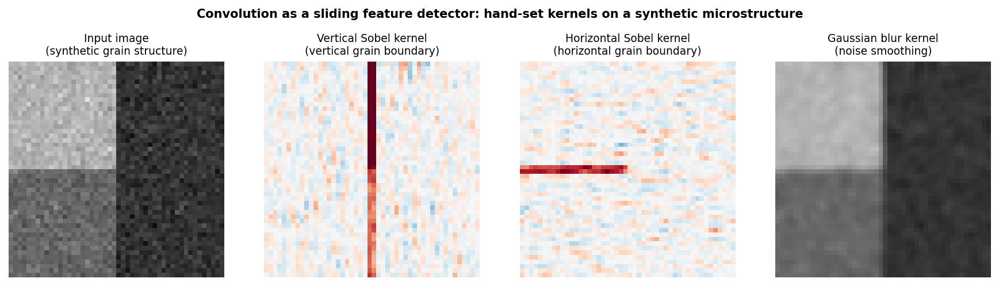
Convolution applied to a synthetic two-grain microstructure. Left: input image (two grains with different intensities, separated by vertical and horizontal boundaries). Centre-left: vertical Sobel kernel responds strongly at the vertical grain boundary. Centre-right: horizontal Sobel responds at the horizontal boundary. Right: Gaussian blur smooths noise. All kernels are 3×3; weights are hand-set, not trained.
The discrete convolution formula
For input image \(I\) and kernel \(K\):
\[ (I \star K)_{m,n} = \sum_{a=-\Delta}^{\Delta}\sum_{b=-\Delta}^{\Delta} K_{a,b}\,I_{m+a,\, n+b} \]
- \(K\) is a small matrix (typically \(3\times3\) or \(5\times5\)); \(\Delta = (k-1)/2\).
- At each output position \((m,n)\): dot product of the kernel with the local image patch.
- Parameter count: \(k^2\) weights — independent of image size \(H \times W\).
- The same \(k^2\) weights are applied at every \((m,n)\) → weight sharing.
Kernels as feature detectors
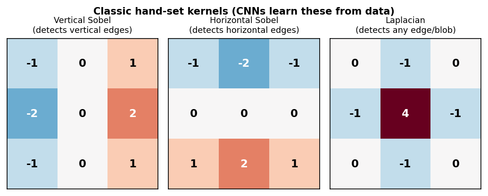
Three classic 3×3 kernels. Left: vertical Sobel — responds to left–right intensity changes. Center: horizontal Sobel — responds to top–bottom changes. Right: Laplacian — responds to any local intensity peak or boundary. Numbers are the kernel weights.
In a trained CNN, the network discovers these (and more complex) filters automatically from labelled examples — no manual kernel design needed.
Stride and padding: controlling output size
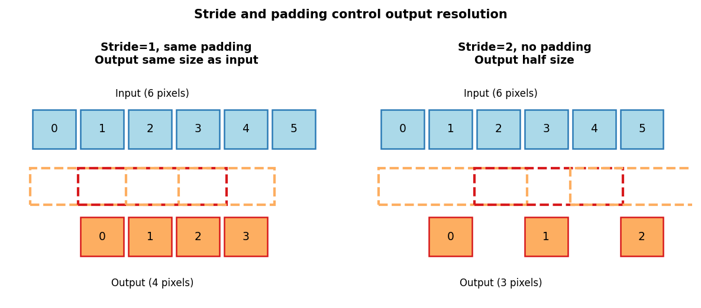
Stride=1 with same-padding (left): the kernel moves one pixel at a time and output is the same size as input. Stride=2 (right): the kernel skips every other position, halving spatial resolution.
- Padding (same): add zeros around the border → output size = input size. Standard in most segmentation architectures.
- Stride \(s\): move the kernel \(s\) pixels per step → output size \(\approx H/s\).
- General rule: \(H_{out} = \left\lfloor\frac{H + 2p - k}{s}\right\rfloor + 1\); e.g. \(k=3, p=1, s=1\) keeps \(H\); \(s=2\) halves it.
- Parameters \(C_{out}(C_{in}k^2+1)\) — independent of \(H, W\): the same network runs on 256² and 4096² images.
Multiple channels: depth in the tensor
- A grayscale image has 1 channel: \(H\times W\times 1\).
- After a layer with \(C_{out}\) kernels: \(H_{out}\times W_{out}\times C_{out}\) (one feature map per kernel).
- A full convolutional layer kernel has shape \(C_{out}\times C_{in}\times k_h\times k_w\).
- Total parameters: \(C_{out}(C_{in}k_hk_w + 1)\) including biases — still independent of \(H, W\).
- EM multichannels: hyperspectral EELS/EDS maps (spatial × energy), multi-segment detector images, RGB-like stacks of different contrast modes.
Weight sharing: the key efficiency principle
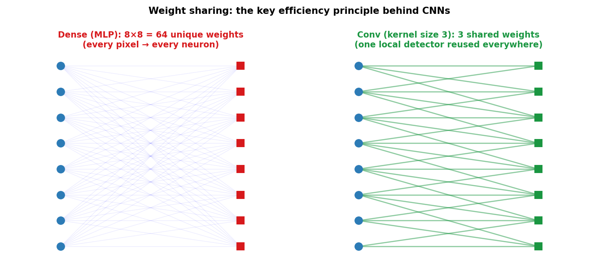
Dense layer (left): every input node connects to every output node — \(n_{in} \times n_{out}\) unique weights. Conv layer (right): the same 3-weight kernel connects each output node to only a local neighborhood of inputs — 3 shared weights total (for the 1-D case shown).
Translation equivariance as an inductive bias
- Translation equivariance: if the input shifts by \(\delta\) pixels, the feature map shifts by \(\delta\) pixels — the detector response follows the feature.
- Formally: \(f(T_\delta X) = T_\delta f(X)\) where \(T_\delta\) is a spatial shift and \(f\) is a convolutional feature extractor.
- This is the correct prior for most microscopy tasks: a precipitate is a precipitate wherever it appears.
- Translation invariance (different!): the final prediction does not change if the input shifts. Built gradually via pooling, striding, and global average pooling — not by convolution alone.
Equivariance preserves “where.” Invariance discards “where” and keeps only “what.”
Beyond translation: rotations and mirrors in EM
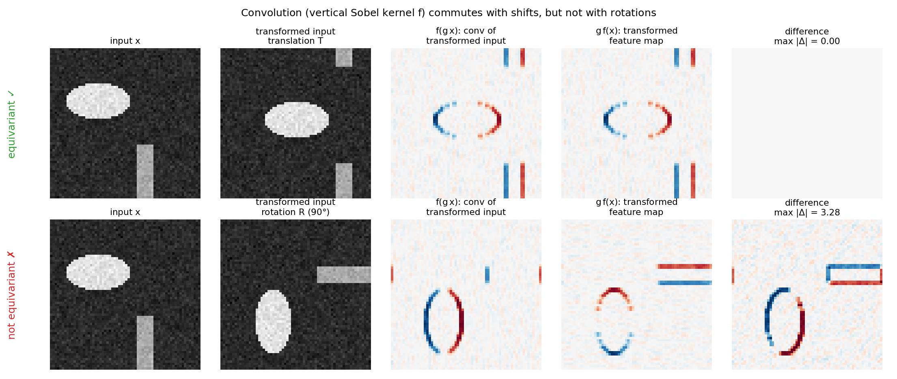
Numerical check with a vertical Sobel kernel \(f\). Top: shifting the input and then convolving equals convolving and then shifting (difference exactly zero). Bottom: for a 90° rotation the two orders differ — the kernel only “knows” vertical edges. Generated by img/make_figures.py.
Getting symmetry: three routes
- Formal definitions (group \(G\) acting on images and feature maps):
- equivariant: \(f(g\cdot x) = g\cdot f(x)\) — output transforms with the input (segmentation masks, denoised images, strain maps);
- invariant: \(f(g\cdot x) = f(x)\) — output ignores the transform (phase label, “defect present?”).
- Route 1 — augmentation: train on randomly rotated/flipped copies; the network learns approximate symmetry. Cheap, universal; costs data and capacity (Week 8).
- Route 2 — test-time augmentation: average predictions over the 8 rotations/flips of the dihedral group \(D_4\) (un-rotate the masks first). Free at training time, 8× cost at inference.
- Route 3 — build it in: group-equivariant CNNs share weights across rotations as well as translations Cohen, Taco et al., (2016); exact symmetry, fewer parameters, more engineering.
- Rule: know the symmetry of your task first — then decide whether to learn it, average over it, or hard-wire it.
Inductive bias: encoding what you know
- An inductive bias is an assumption baked into the architecture that makes certain functions easy to learn.
- MLP (Week 6): no structure — every function of all inputs equally easy; needs the most data.
- CNN (today): grid + locality + translation weight sharing.
- GNN / transformer (Week 10): graph + permutation symmetry; a transformer is a fully connected graph with learned (attention) edges.
- Strong, correct bias helps with small datasets by ruling out physically unreasonable solutions; a wrong bias caps performance.
Pooling: summarising local responses
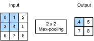
Max-pooling with a 2×2 window. For each non-overlapping 2×2 region, keep the maximum value. Spatial resolution halves in each dimension; channel count is unchanged.
- Max pooling: keep the strongest activation in each local window. Answers: “did this feature appear here?”
- Average pooling: compute the mean. Answers: “how strongly was this feature present overall?”
- No learned parameters — purely deterministic aggregation.
- \(2\times2\) max-pool: halves height and width, doubles the effective receptive field of later layers.
Max pooling: a worked example
Input feature map (4×4):
\[ \begin{pmatrix} 1 & 3 & 2 & 4 \\ 5 & 6 & 7 & 8 \\ 3 & 2 & 1 & 0 \\ 1 & 2 & 3 & 4 \end{pmatrix} \]
After 2×2 max-pool (stride 2):
\[ \begin{pmatrix} 6 & 8 \\ 3 & 4 \end{pmatrix} \]
Top-left 2×2 block: \(\max(1,3,5,6)=6\). Top-right: \(\max(2,4,7,8)=8\).
- Output size: \(2\times2\) from \(4\times4\) — spatial dimensions halved.
- No learned parameters — purely a max operation.
- Approximate invariance: if the 6 moved to the adjacent cell (still in the same 2×2 window), the output is unchanged.
Pooling in practice: the Conv–Pool block
- Standard building block: Conv → ReLU → MaxPool.
- After \(L\) such blocks (each with stride-2 or 2×2 pool): spatial size is \(H/2^L \times W/2^L\).
- Channels typically double at each stage: 64 → 128 → 256 → 512.
- Example: 256×256 input through 4 blocks → 16×16 feature maps with 512 channels.
| Block | Channels | Spatial size (from 256×256) |
|---|---|---|
| 1 | 64 | 128×128 |
| 2 | 128 | 64×64 |
| 3 | 256 | 32×32 |
| 4 | 512 | 16×16 |
Receptive fields: how much context does one neuron see?
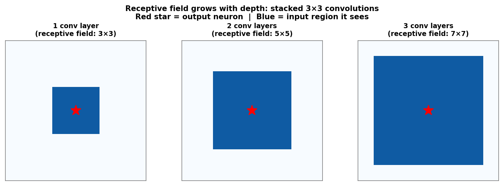
Receptive field of a single output neuron grows with depth. One 3×3 conv layer: 3×3 input region. Two stacked layers: 5×5 region. Three layers: 7×7 region. Red star marks the output neuron; blue region is its receptive field in the input image.
Feature hierarchy: edges → motifs → structures → properties
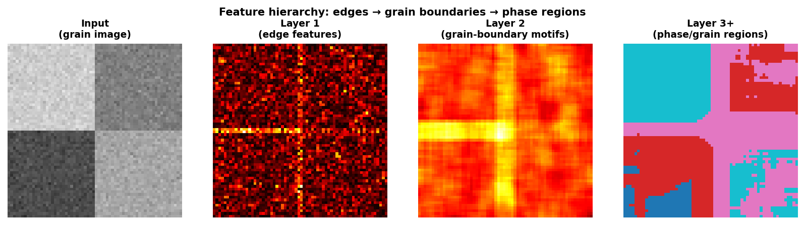
Feature hierarchy on a synthetic grain microstructure. Input (left): two-grain image with boundaries. Layer 1 (centre-left): Laplacian-like edge features highlight all boundaries. Layer 2 (centre-right): neighbourhood-level grain-boundary motifs. Layer 3+ (right): coarse phase/grain-region labels.
Summary: how locality, sharing, and hierarchy combine
| Design choice | What it encodes | EM benefit |
|---|---|---|
| Local receptive field | Features depend on local context | Grain boundaries are local |
| Weight sharing | Same feature appears at many positions | Atomic columns repeat |
| Multiple channels | Many detectors in parallel | Multi-contrast detection |
| Stride / pooling | Coarser scale, larger context | Phase-level reasoning |
| Depth / nonlinearity | Hierarchical feature composition | Atoms → grains → phases |
CNN architectures in one breath: the arc from 1998 to 2015
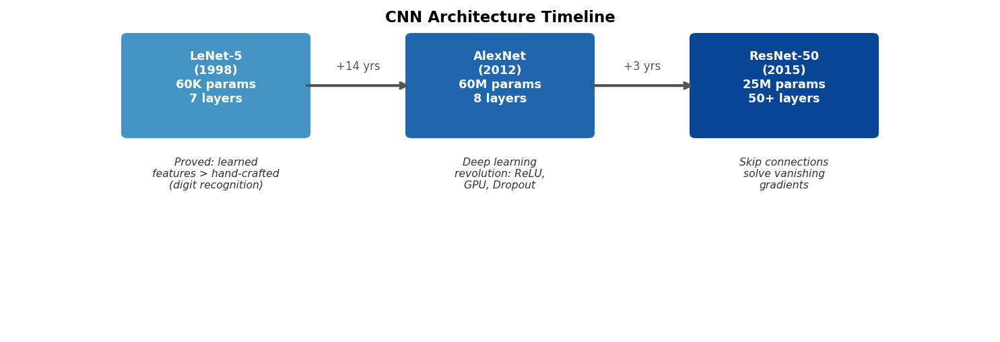
Timeline from LeNet (1998) to AlexNet (2012) to ResNet (2015); VGG (2014) sits between AlexNet and ResNet. Each box states the year, approximate parameter count, depth, and key innovation. Read left to right as increasing depth, scale, and capability.
LeNet: the CNN template
- LeNet-5 LeCun, Yann et al., (1998): two convolutional layers, two pooling layers, three dense layers.
- ~60,000 parameters — tiny by modern standards.
- Proved for the first time that a learned feature extractor could outperform hand-crafted features (SIFT, HOG) on a real vision task.
- The template: Conv → Activation → Pool → Conv → Activation → Pool → Flatten → FC → FC → Output.
- This exact recipe still appears in CNN classifiers for materials micrographs today — often with deeper variants.
AlexNet: the deep learning revolution Krizhevsky, Alex et al., (2012)
- AlexNet (2012): won the ImageNet Large Scale Visual Recognition Challenge by 10 percentage points over the second-place hand-crafted pipeline.
- Key innovations (each still used today):
- ReLU activation: faster convergence, no vanishing gradient for \(z > 0\) (from Week 6).
- Dropout: randomly zero out neurons during training → prevents co-adaptation, reduces overfitting.
- GPU training: made deep networks with 60 million parameters computationally feasible.
- Opened the “deep learning era” — almost every subsequent architecture follows the AlexNet pattern with improvements.
VGG: deep networks from repeated blocks Simonyan, Karen et al., (2015)
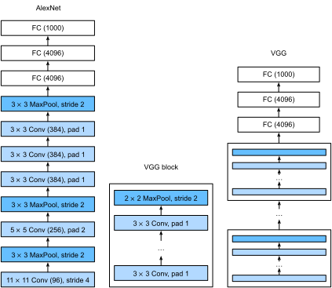
- VGG block: \(n\times\) (3×3 conv, padding 1, ReLU) → 2×2 max-pool. Channels double after each block: 64 → 128 → 256 → 512.
- Why only 3×3? Two stacked 3×3 layers have a 5×5 receptive field, three have 7×7 — with \(3\cdot 9C^2 = 27C^2\) instead of \(49C^2\) weights and two extra non-linearities.
- The design lesson: think in blocks, not layers — a network is a short program:
for c in (64,128,256,512): block(c). - VGG-16 ≈ 138 M parameters (most in the dense head) — accurate but heavy; still a common “perceptual” feature extractor.
Going deeper breaks: the degradation problem
- Naïvely stacking more conv layers (20 → 56) makes training error worse, not only test error He, Kaiming et al., (2016).
- This is not overfitting (training error rises) and not only vanishing gradients (BatchNorm keeps activations well-scaled): plain deep stacks are simply hard to optimise.
- Thought experiment: a deeper net could copy the shallow one and set the extra layers to the identity — yet SGD does not find that solution.
- Idea: make the identity the default — let each block learn only a correction to it.
ResNet: skip connections solve vanishing gradients He, Kaiming et al., (2016)
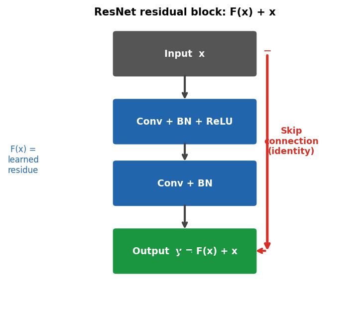
ResNet residual block. The main path learns a residual function F(x) = y − x. The skip connection adds the input x directly to the output. During backpropagation, gradients flow through the skip path without attenuation — solving the vanishing gradient problem for 50+ layer networks.
\[\mathbf{y} = F(\mathbf{x}) + \mathbf{x}\] Instead of learning the target \(\mathbf{y}\), learn the residual \(F(\mathbf{x}) = \mathbf{y} - \mathbf{x}\).
Residual blocks in practice: BN, stages, and why EM cares
- Basic block: conv3×3 → BN → ReLU → conv3×3 → BN, add input, ReLU. If shapes change (stride 2, more channels) the skip uses a 1×1 conv.
- Gradient view: \(\frac{\partial \mathbf{y}}{\partial \mathbf{x}} = \mathbf{I} + \frac{\partial F}{\partial \mathbf{x}}\) — the identity term carries the gradient through every block unattenuated.
- Stages: ResNet-18/34/50 = 4 stages of residual blocks, stride-2 between stages, global average pooling + one linear layer (no big dense head: ResNet-18 ≈ 11 M params vs VGG-16 ≈ 138 M).
- EM use: ResNet backbones are the standard encoder for U-Net-style segmenters and the usual starting point for transfer learning (Week 8).
- Skip connections appear twice today: additive (ResNet: ease optimisation) and concatenating (U-Net: restore spatial detail).
U-Net: encoder–decoder for segmentation Ronneberger, Olaf et al., (2015)
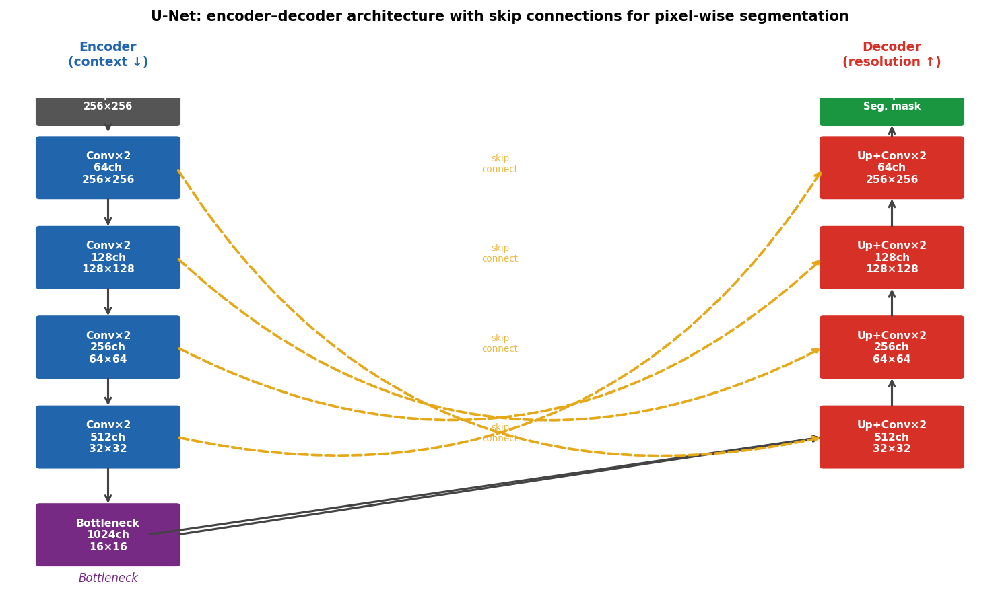
U-Net architecture. Left column (blue): encoder — successive Conv+Pool blocks extract features while halving spatial resolution and doubling channel count. Right column (red): decoder — successive upsample+Conv blocks restore spatial resolution. Yellow dashed arrows: skip connections concatenate encoder features into corresponding decoder levels.
U-Net: encoder, bottleneck, decoder
Encoder path
- Conv × 2 → ReLU → MaxPool (stride 2).
- Repeat 4 times: spatial halves, channels double.
- Each level captures increasing context.
- Similar to a standard classification CNN encoder.
Decoder path
- Upsample (bilinear or transposed conv) → concatenate skip.
- Conv × 2 → ReLU.
- Repeat 4 times: spatial doubles, channels halve.
- Final 1×1 conv → class probabilities per pixel.
Why skip connections are non-negotiable for segmentation: without them, precise boundary locations are lost in the bottleneck compression; the output mask is correct in texture but blurry in boundary position.
U-Net output: per-pixel classification
- Input: \(C\times H\times W\) (image or multi-channel tensor).
- Output: \(K\times H\times W\) (K class probability maps, same resolution as input).
- At inference: \(\arg\max\) over the \(K\) channels gives the segmentation mask.
- Loss: cross-entropy at every pixel, averaged over the image — often combined with a Dice loss (next slides).
- The loss is differentiable → same backprop + Adam optimisation as any other network.
Segmentation metrics: IoU and Dice, not accuracy
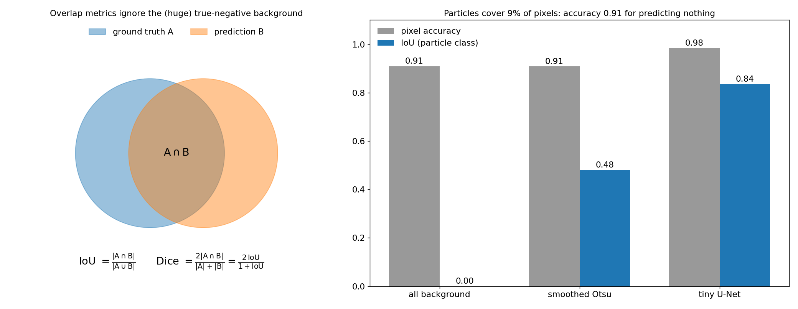
Left: IoU and Dice compare predicted and true foreground sets and ignore true-negative background. Right: on our synthetic particle images (9% foreground) predicting nothing already scores 0.91 pixel accuracy; a smoothed Otsu threshold also scores 0.91 but IoU 0.48; the tiny U-Net from the notebook reaches IoU 0.84. Generated by img/make_figures.py.
Class imbalance: losses that keep the minority visible
- Pixel-wise BCE is an average over pixels: with 9% particles, the minority class carries 9% of the loss weight.
- Weighted BCE:
pos_weight\(=(1-f)/f\) up-weights the rare class. - Soft Dice loss Milletari, Fausto et al., (2016), with \(p_i=\sigma(z_i)\): \[\mathcal{L}_\text{Dice} = 1-\frac{2\sum_i p_i y_i+\epsilon}{\sum_i p_i+\sum_i y_i+\epsilon}\] normalised by the foreground size → “predict nothing” costs ≈ 1.
- Focal loss Lin, Tsung-Yi et al., (2017): down-weights easy, confidently-correct pixels.
- Common recipe: BCE + Dice. Notebook ablation: BCE only collapsed to “all background” (IoU 0.00, accuracy 0.91) in the same 15-epoch budget where BCE + Dice reached IoU 0.84.
A tiny U-Net on synthetic particles (the notebook)
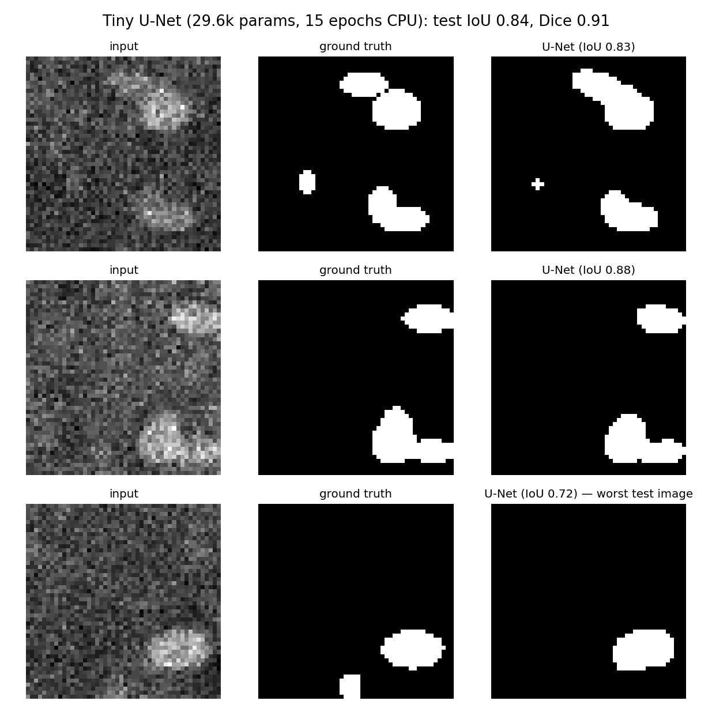
Tiny U-Net (2 levels, 8–16–32 channels, BatchNorm, 29.6 k parameters) trained for 15 epochs on 256 synthetic 48×48 images of bright particles on a textured, unevenly lit support with shot noise. Rows: median, good, and worst test image. The worst case misses a low-contrast particle entirely. Generated by img/make_figures.py (same code and seeds as the notebook).
Honest validation for segmentation
- Tile leakage: cutting one large micrograph into overlapping 256² tiles and splitting the tiles randomly puts neighbouring pixels in train and test → inflated IoU. Split by micrograph, specimen or session (
GroupKFold, Week 4). - Label ceiling: measure IoU between two annotators on a subset; a model cannot meaningfully beat that ceiling.
- Report per class and per image: mean IoU hides that one rare phase (or the faint particles) is never found.
- Downstream quantity: check the number you actually need — particle size distribution, phase fraction, grain count — not just IoU.
EM case study 1: Au nanoparticle phase segmentation
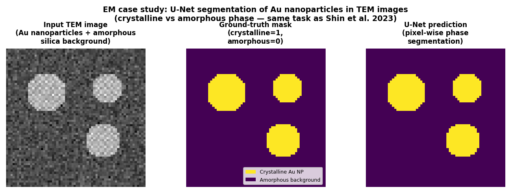
U-Net applied to TEM images of Au nanoparticles on an amorphous support. Left: input TEM image (representative Au-nanoparticle-on-amorphous-support TEM segmentation task). Centre: ground-truth binary mask (crystalline=bright, amorphous=dark). Right: U-Net prediction — pixel-wise classification matching the ground truth closely.
U-Net TEM segmentation: published results
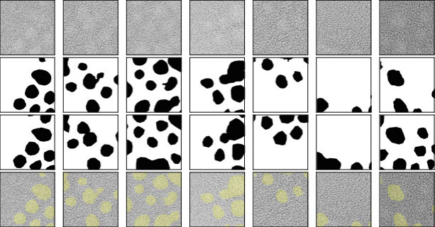
U-Net segmentation of TEM images from a published materials science application. The encoder–decoder with skip connections accurately reproduces phase boundaries, even in noisy low-dose images where the boundary is only 1–3 pixels wide.
EM case study 2: Grain boundary segmentation from synthetic training data
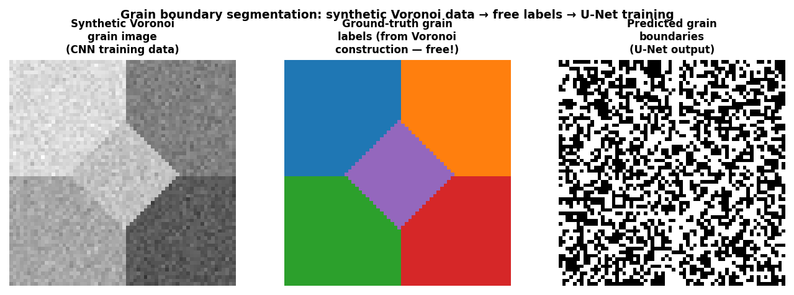
Grain boundary segmentation pipeline. Left: synthetic Voronoi grain image (used for CNN training). Centre: automatically generated ground-truth grain labels (free — no expert annotation). Right: U-Net predicted grain boundaries from the output mask.
Synthetic-to-real transfer: Voronoi → SEM grain maps
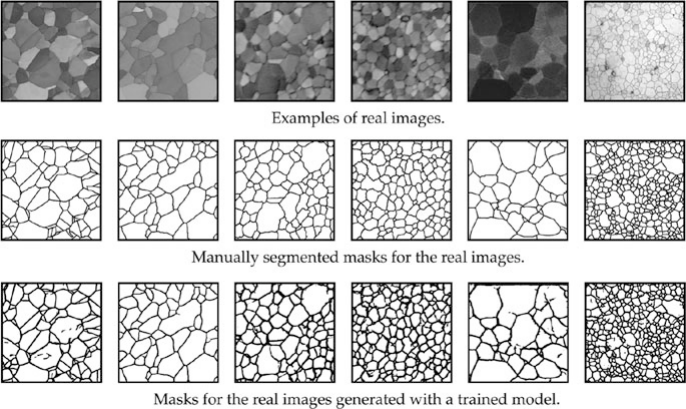
CNN grain segmentation applied to a real SEM polycrystal image. The network was trained only on synthetic Voronoi grain images (with perfect free labels), yet it correctly identifies grain boundaries in the real SEM image — demonstrating that the topological signature of boundaries transfers from synthetic to real data.
EM case study 3: defects in irradiated steel Roberts, Graham et al., (2019), doi:10.1038/s41598-019-49105-0
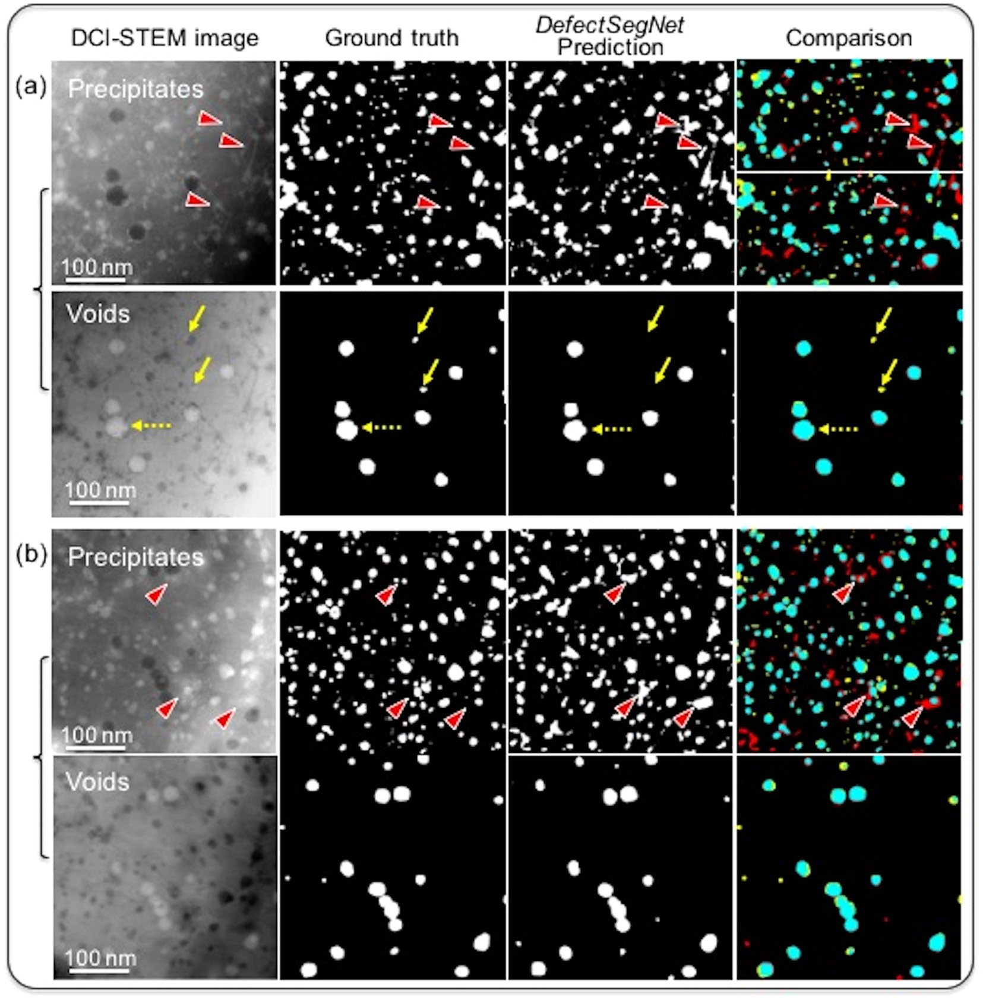
DefectSegNet predictions on STEM (DCI) images of irradiated steel: input, ground truth, prediction and comparison for precipitates and voids. From Roberts, Graham et al. (2019), doi:10.1038/s41598-019-49105-0 (Sci. Rep., CC BY 4.0).
- U-Net-type encoder–decoder with dense skip connections; per-pixel labels for dislocation loops, precipitates and voids.
- Reaches roughly inter-annotator agreement — beyond that point more model capacity buys nothing; better labels do.
Quantitative example: parameter savings and labelling cost
- A \(3\times3\) conv layer with 64 input and 128 output channels: \(128 \times (64 \times 9 + 1) = 73{,}856\) parameters.
- A dense layer on a \(256\times256\) image with 128 outputs: \(256^2 \times 128 = 8{,}388{,}608\) parameters — 114× more.
- A compact four-level U-Net (32→64→128→256 channels) for 256×256 binary segmentation: ~7.8 million parameters. The original Ronneberger et al. U-Net is ~30 million parameters.
- A 256×256 dense prediction MLP would need hundreds of millions of parameters per layer.
- Labelling cost: training a U-Net from scratch on EM data typically requires 50–200 carefully annotated images. Transfer learning and self-supervised pre-training (Week 8) can reduce this to 20–50.
Why explain a CNN in EM?
- A segmenter or classifier with 0.99 test accuracy can still be right for the wrong reason — “shortcut learning” Geirhos, Robert et al., (2020).
- In EM, shortcuts are everywhere: scan-start or detector-edge artefacts, session-specific contrast, scale bars and annotations, beam damage that co-occurs with one specimen, drift direction.
- Local explanation question: which input pixels drove this particular prediction?
- Three workhorse answers for CNNs: gradient saliency, Grad-CAM, occlusion.
- Their job is diagnosis (find shortcuts, understand failures, decide what data to add) — not proof that a model is physically correct.
Gradient saliency: one backward pass Simonyan, Karen et al., (2014)
- For class score (logit) \(z_c\) and input image \(\mathbf{x}\): \(\;S_i = \left|\dfrac{\partial z_c}{\partial x_i}\right|\).
- Large \(S_i\): a small change of pixel \(i\) changes the score strongly → the model is locally sensitive to pixel \(i\).
- Implementation:
x.requires_grad_(True); model(x)[0, c].backward(); S = x.grad.abs()— backprop from Week 6, but w.r.t. the input instead of the weights. - For segmentation: backpropagate from a set of output pixels (e.g. all false positives) to ask what drove those decisions.
- Caveats: noisy, pixel-level, local linearisation — sensitivity is not the same as contribution.
Grad-CAM: explanations from the last conv layer Selvaraju, Ramprasaath R. et al., (2017)
- Take the last convolutional feature maps \(A^k\) (e.g. 32 channels at 8×8) and the gradient of the class score w.r.t. them.
- Channel weights and map: \[\alpha_k^c = \frac{1}{Z}\sum_{i,j}\frac{\partial z_c}{\partial A^k_{ij}}, \qquad L^c_\text{Grad-CAM} = \mathrm{ReLU}\Big(\sum_k \alpha_k^c A^k\Big)\]
- Upsample to image size → smooth, region-level heat map.
- Resolution = resolution of the last conv layer (coarse); class-specific; works for any CNN architecture with a conv backbone.
Occlusion: model-agnostic “what if this region were missing?” Zeiler, Matthew D. et al., (2014)
- Slide a grey patch over the image; record the drop in predicted probability \(p_c(\mathbf{x}) - p_c(\mathbf{x}_\text{occluded})\) at each position.
- Model-agnostic: needs only forward passes — works for any classifier, even non-differentiable pipelines.
- Measures a global effect (remove a region) instead of a local slope → often much crisper than gradients.
- Costs: one forward pass per patch position; resolution = patch size; result depends on the fill value (mean, black, blurred) → report it.
Shortcut learning: same accuracy, different physics
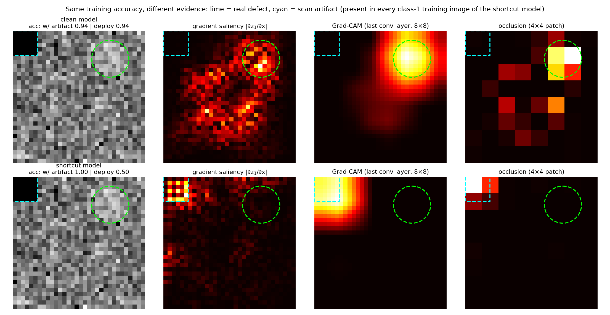
Defect classifiers (class 1 = faint bright disk). The shortcut model was trained on images in which every defect image also had a dark 6×6 corner (a scan-start/detector-shadow artefact); the clean model on the same images without it. Test accuracy with the artefact: 0.94 vs 1.00; deployment accuracy (defects, no artefact): 0.94 vs 0.50. All three methods put the shortcut model’s evidence in the corner. Generated by img/make_figures.py.
Explaining a segmentation failure
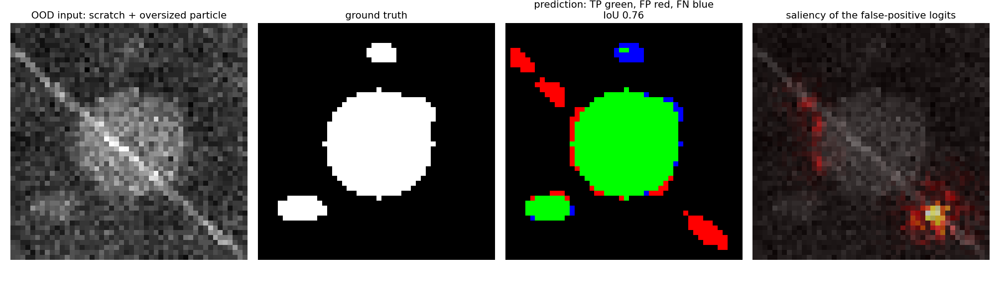
Tiny U-Net applied to an out-of-distribution image with a bright scratch and an oversized particle. Scratch segments become false positives (red); the saliency of the summed false-positive logits sits on the scratch itself. Generated by img/make_figures.py.
Sanity checks and honest limits of saliency
- Model-randomisation test Adebayo, Julius et al., (2018): randomise the weights and recompute. If the map barely changes, the method shows image structure (edges, bright columns), not what the model learned. Notebook: trained vs randomised saliency correlation ≈ 0.
- Fragility Kindermans, Pieter-Jan et al., (2019): simple input transformations (e.g. a constant shift) can change some attribution maps without changing the prediction.
- Sensitivity ≠ causation: a hot pixel says the prediction is sensitive there, not that the physics is right. A coherent map can be coherent about the wrong feature (the corner).
- Use them as hypotheses → test them: occlude the suspected region, build a shifted test set, retrain without the cue.
Failure modes of CNNs in EM applications
- Domain shift: a CNN trained on HAADF images from one microscope fails on HAADF images from a different microscope with a different contrast transfer function or detector geometry. Solution: retrain on the target instrument or use domain adaptation.
- Beam damage artefacts: a CNN trained on undamaged samples may misclassify beam-damage artefacts as phase boundaries. Always inspect predictions qualitatively.
- Scale sensitivity: a CNN trained on 0.1 nm/pixel resolution misclassifies images at 0.5 nm/pixel. Always match training and inference resolution.
- Out-of-distribution inputs: a U-Net trained on grain boundaries gives nonsense output on a completely different microstructure type. Check training data coverage.
Practical checklist for CNN-based EM analysis
- Match resolution: train and infer at the same pixel size.
- Honest validation: use
GroupKFoldby specimen or microscopy session — not random splits. - Inspect qualitatively: always look at predicted masks on held-out images before reporting metrics.
- Report IoU and Dice, not accuracy: for segmentation on imbalanced masks (thin boundaries vs large grains), accuracy is misleading.
- Start simple: a 4-level U-Net with 32→64→128→256 channels often outperforms a 50-layer ResNet when \(N < 200\) labelled images; beat a thresholding baseline first.
- Explain before deploying: saliency/occlusion on failures and on a shifted test set; randomisation sanity check.
Real-data practice: MetalDAM in Ai4Mat
- The companion repository Ai4MatLectures (github.com/ECLIPSE-Lab/Ai4MatLectures) provides PyTorch-ready EM datasets:
from ai4mat.datasets import ... - MetalDAM: SEM micrographs of additively manufactured metal with per-pixel phase/defect labels — the real-data version of today’s notebook.
- Suggested exercise (miniproject-sized): U-Net with 3–4 levels (or a ResNet encoder) → per-class IoU with a split by micrograph → saliency on the worst class → one augmentation that fixes a failure.
- Also in Ai4Mat: HRTEM images and NEU-DET surface defects for classification with Grad-CAM.
Self-study notebook
notebooks/week07_cnn_segmentation.ipynb
- Hand-set kernels (Sobel, Laplacian, Gaussian) as one conv layer
- Equivariance check: shift ✓, rotation ✗
- Synthetic particle images with free masks, split by “session”
- IoU/Dice and the accuracy trap; Otsu baseline (IoU 0.48)
- Tiny U-Net, BCE + soft Dice, CPU: IoU 0.84, Dice 0.91
- Saliency on an OOD failure (scratch)
- Shortcut demo: saliency, Grad-CAM, occlusion; randomisation check

- Runs end-to-end on a CPU in a few minutes.
- Exercises: soft-Dice loss, ablations (no skips / no Dice), saliency sanity check.
Summary: the week in six points
- Convolution = locality + weight sharing: parameters independent of image size, translation-equivariant feature maps.
- Equivariance vs invariance: layers are shift-equivariant; invariance comes from pooling/GAP; rotations need augmentation, TTA or group-equivariant layers.
- Depth needs design: VGG blocks of 3×3 convs; ResNet identity skips + BN make very deep nets trainable.
- U-Net = encoder (context) + decoder (resolution) + concatenating skips (where) → one label per pixel.
- Evaluate with IoU/Dice, fight class imbalance in the loss (BCE + Dice, weights), validate by specimen/session.
- Explain before trusting: saliency, Grad-CAM, occlusion diagnose shortcuts and failures; sanity-check the explanation itself.
Must-know for the exam
- Output size \(\lfloor (H+2p-k)/s\rfloor+1\) and parameter count \(C_{out}(C_{in}k^2+1)\) — independent of \(H,W\).
- \(f(T x)=T f(x)\) (equivariance) vs \(f(Tx)=f(x)\) (invariance); CNNs are not rotation-equivariant by default.
- Stacked 3×3 convs: receptive field grows by 2 per layer; pooling/stride multiplies the growth.
- ResNet: \(\mathbf{y}=F(\mathbf{x})+\mathbf{x}\) eases optimisation; U-Net skips concatenate encoder features to restore localisation.
- IoU, Dice (\(=2\mathrm{IoU}/(1+\mathrm{IoU})\)); pixel accuracy is misleading under imbalance; soft Dice / weighted BCE as remedies.
- Saliency \(|\partial z_c/\partial \mathbf{x}|\), Grad-CAM (last conv layer), occlusion (model-agnostic); a plausible map can reveal a shortcut, and must pass a randomisation sanity check.
Next week: small data — augmentation, transfer & self-supervision
- Next week’s question: you have 30 labelled TEM images. How do you train a reliable CNN?
- Physics-respecting augmentation: rotations/flips from the crystal symmetry, Poisson noise at the right dose, drift, scratches — the fix for today’s scratch failure.
- Transfer learning: start from a pretrained encoder (e.g. a ResNet) — linear probe vs fine-tune.
- Synthetic data & sim-to-real: Voronoi grains, simulated HRTEM — free labels like today’s notebook.
- Self-supervised learning & foundation models: SimCLR, masked autoencoders, DINO; SAM / μSAM for microscopy.
Continue
References

©Philipp Pelz - FAU Erlangen-Nürnberg - Data Science for Electron Microscopy